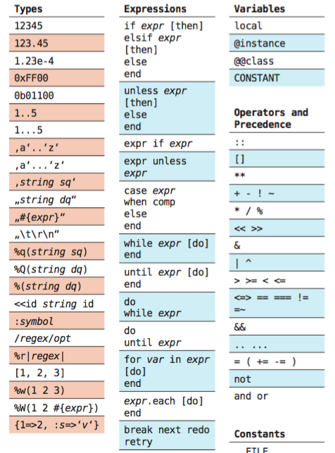
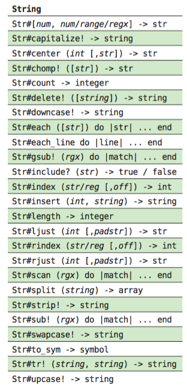
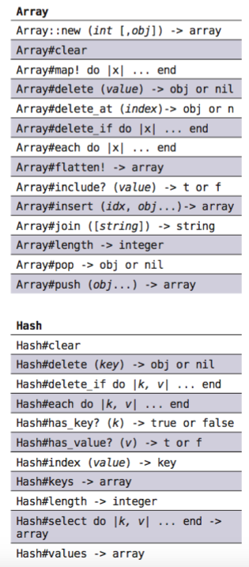
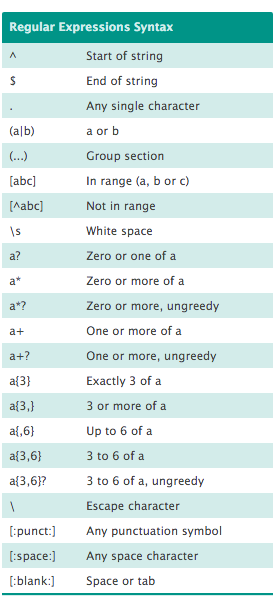
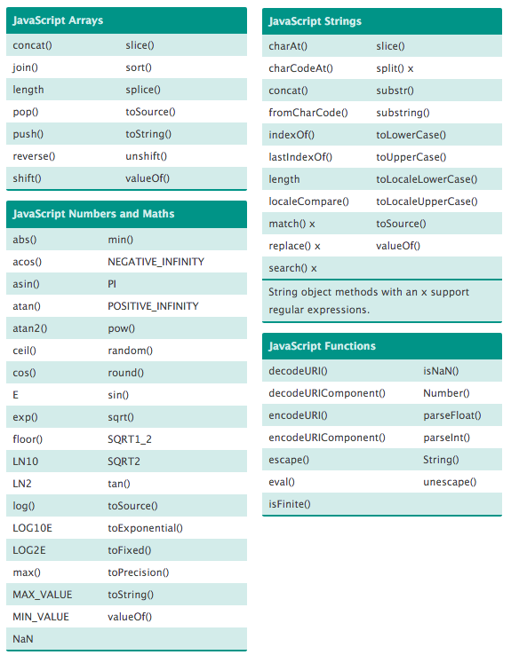
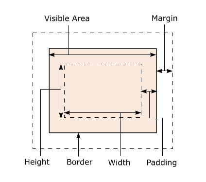

A guide to important methods and information
This cheat sheets contains information I obtained in Phase 0 and consider useful for my period in Phase 1. I did not feel the need to create a personal cheat sheet as I found resources that work for me and should for any beginner programmer.
RUBY
Proper Syntax
- Returns are default it can be re stated but a ruby method will always return something by default.
- No semicolons are needed at the end of a line of code.
- Normally the use of capital letters is reserved for specific ocassions, use lowercase if uncertain
- Methods are mor straightforward than one might think sometime writing as one would think would work actually works!
Ruby Cheat Sheet
This is a link to a great ruby Cheat SheetAnother great link!
All the extracts shown next are property of www.cenophobie.com, go to their page for more info
  JAVASCRIPT
Proper Syntax
- Returns are not default methods need to be told what to return
- Semicolons are needed at the end of a line of code.
- Methods are not as straightforward as Ruby look up to avoid getting stuck in the rabbithole.
Javascript Cheat Sheet
This is a link to a great ruby Cheat SheetAll the extracts shown next are property of David Child in www.cheatography.com, go to their page for more info
  `CSS and HTML
HTML+CSS Cheat Sheet
This is a link to a great CSS cheat sheetThis is a link to a great HTML cheat sheet
This image is a reminder of the properties of boxes in css
